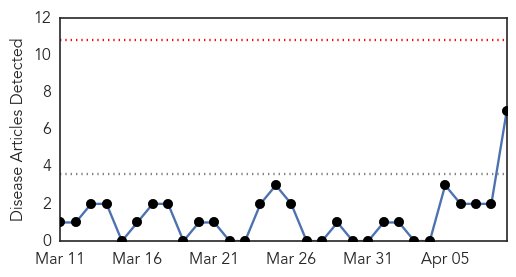
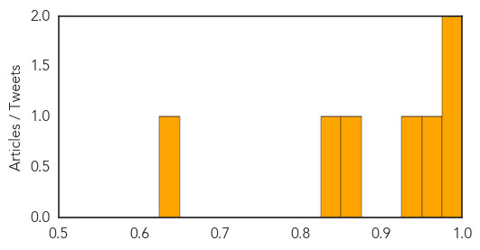
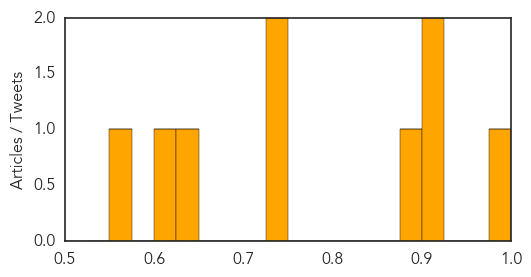

Swine Flu
30-Day Web Trend
0 alerts, 0 warnings

30-Day Twitter Trend
1 alerts, 0 warnings

Article Locations

Article Confidences
Top Articles:
- 0.997
- Washington State Sea Otters Infected With Human H1N1 Pandemic Virus
- 0.975
- Researchers question Tamiflu's effectiveness in treating the flu
- 0.952
- Review questions effectiveness of anti-viral flu drugs
- 0.943
- Ministers blew £650MILLION on useless anti-flu drugs
- 0.863
- Tamiflu: Millions wasted on flu drug, claims major report
- 0.833
- Tamiflu's effectiveness in cutting flu hospitalizations questioned
- 0.631
- Tamiflu: Britain spent £424m on a drug that shortens bouts but is no cure
Top Tweets:
-
No tweets found for Apr 09, 2014
Dengue Fever
30-Day Web Trend
5 alerts, 1 warnings

30-Day Twitter Trend
1 alerts, 0 warnings

Article Locations

Article Confidences
Top Articles:
- 0.999
- The dengue mosquito bites and makes Latin America sick - World
- 0.921
- U.N. Buzzes Over Vector Borne Diseases
- 0.901
- Health Department to canvass Rio area Saturday in hopes of preventing dengue fever outbreak
- 0.899
- Sangam University Bhilwara Rajasthan
- 0.741
- UNICEF Responds to Urgent Water and Sanitation Needs
- 0.739
- Construction sites found harbouring aedes mosquitoes - Nation
- 0.626
- Dengue Fever:outreach and prevention efforts in Martin County
- 0.624
- Insecticide manufacturer gives RM200,000 to ministry's prevention initiative - Community
- 0.551
- Public health: High Court asks for report on dengue fever prevention
Top Tweets:
-
No tweets found for Apr 09, 2014